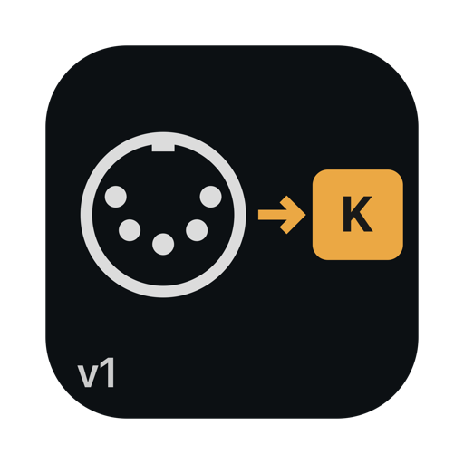
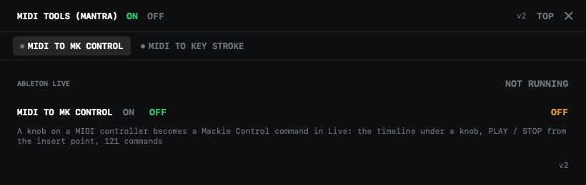

MIDI Tools (Mantra)
Any MIDI controller you already have, a knob box, a keyboard, a pad, can drive Ableton Live like a Mackie Control surface, or press keys on your Mac. One small app in the menu bar, two tools, each with its own ON and OFF.
Version 1 · macOS 14 or newer · Apple Silicon and Intel · 1.5 MB
MIDI to MK Control
A knob or key becomes a Mackie Control command in Live: the playhead under a knob, PLAY and STOP from the insert point, 121 commands to choose from. Live's own MIDI mapping cannot give you the playhead; this can.
MIDI to Key Stroke
A knob's CC or a key's note becomes a key stroke in whatever app is in front, one key per value. Or make one knob the Mac's own volume, with the Mac's own volume square on the screen.
Learn by turning
Press DETECT, turn the knob: the controller and the number are filled in. Then press the key you want. Nothing to type.
Nothing leaves your Mac
No account, no network. It listens to your MIDI devices and talks to Live on your own computer.

The window: one tab per tool, each switched on and off on its own; MIDI in the menu bar opens it.
Install
- Open the downloaded
MantraMIDITools-1.dmgand drag MIDI Tools (Mantra) onto Applications. - Open it. The first time, macOS says it cannot check the app: it is signed by its author, not through Apple's paid program. Go to System Settings › Privacy & Security, scroll down and press Open Anyway.
- For MIDI to Key Stroke, allow Accessibility; the PERMISSIONS word at the top right opens the right page.
- For MIDI to MK Control: in Audio MIDI Setup › MIDI Studio switch the IAC Driver on; in Ableton Live, Settings › Link, Tempo & MIDI, choose MackieControl as a Control Surface with its input on IAC Driver Bus 1. For PLAY / STOP from the insert point, install AbletonOSC in Live.
Privacy
Settings stay in ~/.config/midi-tools.json. The app has no account and sends nothing anywhere.